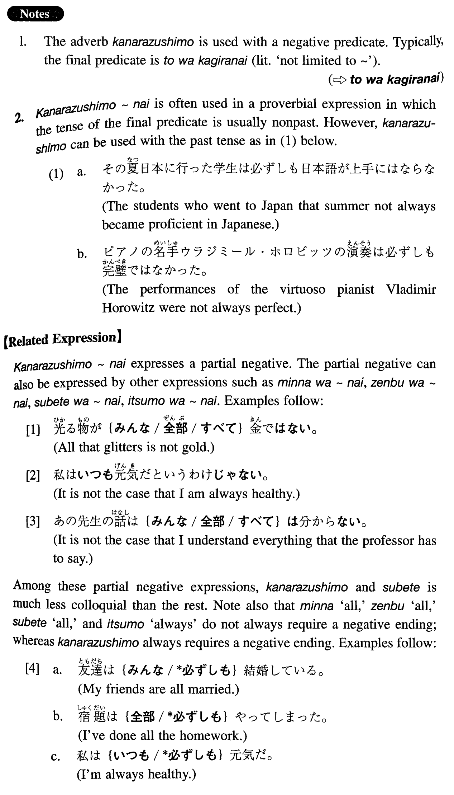

←
DoJG
→
必ずしも
(I. 92)
Example sentences
(ksa).
頭のいい人が、
必ずしも
成功するとは限らない。
A bright person does not always succeed.
(ksb).
高い料理が
必ずしも
美味しいわけではない。
Expensive dishes are not always delicious.
(ksc).
記憶力のいい人が
必ずしも
外国語が上手だとは言えない。
One cannot always say that people with good memories are good at foreign languages.
(ksd).
日本人が
必ずしも
いい日本語の先生だとは思わない。
I don't think that a Japanese is always a good Japanese language teacher.
(a).
結婚しても
必ずしも
幸福になるとは言えない。
One cannot always say that marriage brings happiness.
(b).
運動をよくする人が
必ずしも
長生きするとは限らない。
People who exercise regularly do not always live long.
(c).
日本へ行った学生が日本語が上手になるかというと、
必ずしも
そうではない。
Students who have been to Japan do not always become proficient in Japanese.
(d).
お金は人を
必ずしも
幸福にはしない。
Money does not always bring happiness to people.
(e).
優れた研究者が
必ずしも
優れた教育者であるわけではない。
It is not always the case that an able researcher is an able educator.
(f).
良薬は口に苦しと言うが、苦い薬が
必ずしも
いいとは限らない。
They say good medicine is bitter, but bitter medicine is not always good.
(g).
眼鏡をかけて、カメラを下げて、集団で歩いている東洋人が
必ずしも
日本人ではない。
An oriental wearing glasses, carrying a camera and walking in a group is not always a Japanese.
Formation
(i)
必ずしも
{Vinformal/Adjectiveい}
とは
{限ら /言え/思わ}ない
必ずしも
{静か/先生}ではない
Something is not always quiet/someone is not always a teacher
